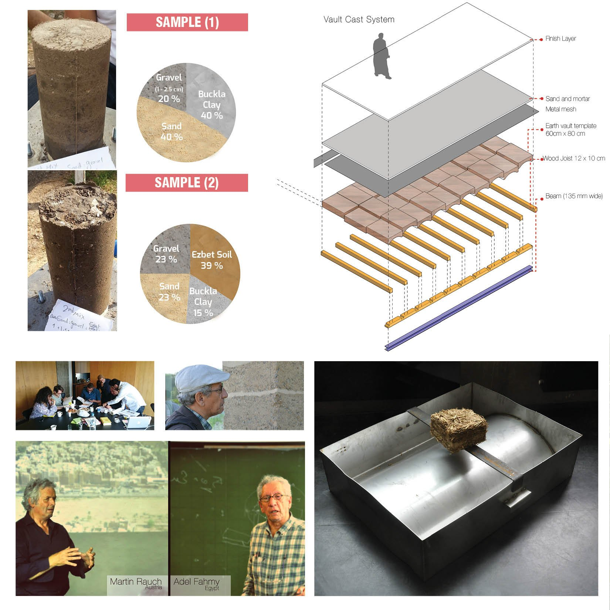

/ WORKSHOP — EXPERTS
EZBET Earth
Building Workshop
A hands-on experts’ workshop in Stuttgart, Germany — learning traditional earth-construction techniques, from adobe to rammed earth, alongside practitioners Adel Fahmy and Martin Rauch.

/ OVERVIEW
Learning the oldest material by building with it.
Attending an earth-building workshop in Stuttgart was a transformative experience — the chance to learn directly from practitioners like Adel Fahmy and Martin Rauch, whose knowledge and evident passion for sustainable building made the whole week worthwhile.
Throughout the workshop we worked hands-on with traditional earth-building techniques, from adobe to rammed-earth construction. A real sense of community grew among the participants as we built together — environmentally sound structures made with our own hands.
I left empowered and better equipped to keep promoting sustainable building practices back in my own community.
